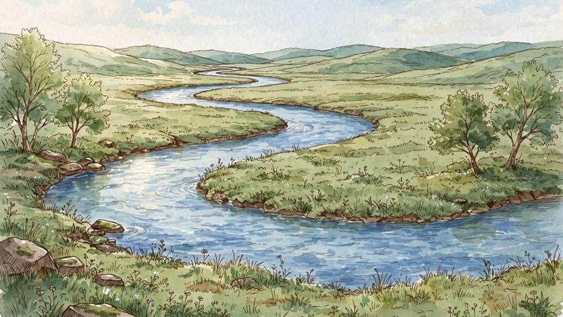
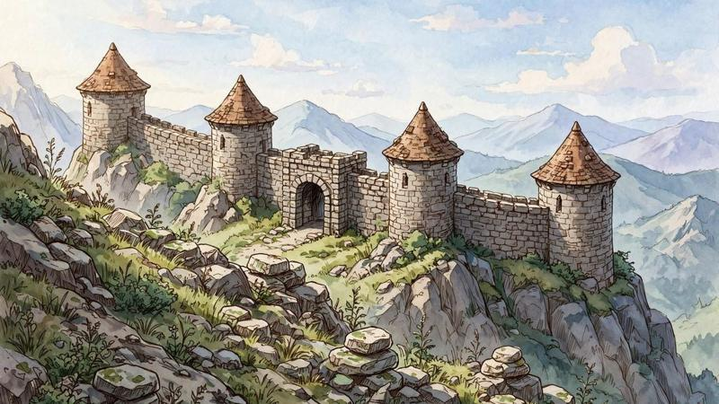
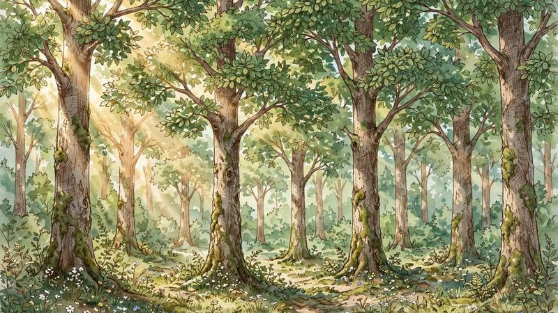

→ 世界と筋の設計(新) / → 世界地図のデータ一覧(新) / → 風景の試作(新) / → 風景の試作・円筒版(新) / → 風景の試作・合成版(新) / → 街の試作(集めた絵を並べる)
→ 世界を毎回つくる(6回分)
→ 世界をタップして景色を見る(新)
見せ方の試作 · たたき台
北の砦が落ち、百人隊が殿を務める
1つの出来事を、5つの場面で通して見せます。層を降りるのではなく、出来事の「主語」が国から軍、会戦、百人隊、主人公へ移るのに合わせて、画面の絵の言葉を変えます。
引き継ぐもの
画面全体を拡大して見せません。次の2つだけを、場面をまたいで持ち越します。
- 主語: 追っている相手(北の軍、この百人隊、隊長)
- 名前のついた目印: 白瀬川、灰色の橋、北の砦
場面1 · 主語は国
勢力図
世界
絵待ち: 羊皮紙の政略地図
真上から見た平面。国ごとの塗り分け、国境、首都、街道、軍の旗。山や森は小さな記号で、立体にはしない。
北の砦の周りに枠を付け、その枠が次の場面に開く
場面2 · 主語は軍
進軍図
北方の国›国境地方

仮: 今ある絵灰色の橋の周りに枠を付け、会戦の図に開く
場面3 · 主語は会戦
作戦図
北方の国›国境地方›灰色の橋の隘路
絵待ち: 淡彩の作戦図
真上からの平面。橋、両岸の高地、谷道を陰影で表す。部隊の枠と向きは、地図の上に重ねて表示する。
橋の守りに就く百人隊を追い、戦場の場面に寄る
場面4 · 主語は百人隊
戦場の場面
国境地方›灰色の橋の隘路›第三百人隊

仮: 今ある絵(兵は未配置)隊長に寄り、戦いのあとの夜を見せる
場面5 · 主語は主人公
場面絵
第三百人隊›隊長 · 夜営

仮: 今ある絵(人物は未配置)絵柄の一覧
場面ごとに必要な絵
| 場面 | 絵柄 | ある絵 | 要る絵 |
|---|---|---|---|
| 勢力図 | 羊皮紙の政略地図 | なし | 台紙、山・森・街・砦の小記号 |
| 進軍図 | 鳥瞰の絵地図 | 山・森・街・城・地面 | 街道、補給線の見せ方 |
| 作戦図 | 淡彩の作戦図 | なし | 台紙、部隊の枠 |
| 戦場の場面 | 45度の彩色画 | 地面、背景 | 兵、旗、隊列 |
| 場面絵 | 挿絵 | 背景24枚 | 人物(隊長、部下) |
絵待ちの2枚のプロンプト
古い羊皮紙に描かれた政略地図の台紙。真上から見た平面図。水彩とペン画のアニメ風。川が流れる大陸の一部に、山脈・森・湿地・都市・砦の小さな手描き記号、街道の点線、国ごとに淡い色で塗り分けた領土と太い国境線。文字・人物・紋章は描かない。縁は古い紙のしみ。正方形。
戦場を描いた作戦図の台紙。真上から見た平面図で、羊皮紙に水彩とインク。川に架かる石橋、両岸の高地は等高線の濃淡で表し、谷あいの隘路を通す。部隊を重ねるための空きを残し、人物・兵・文字・矢印は描かない。縁は古い紙。正方形。
動く試作
第1弾の絵で、6つの場面を通して動かせます。「降りる」を押すと、枠に寄って次の場面に変わります。
了承をお願いしたい点
- この5つの場面の考え方(主語で場面が決まり、絵の言葉を変える)でよいか。
- 引き継ぐのは「主語」と「名前のついた目印」だけ、という降り方でよいか。
- 国の旗や紋章は、絵ではなく規則で組み合わせて出す形でよいか。